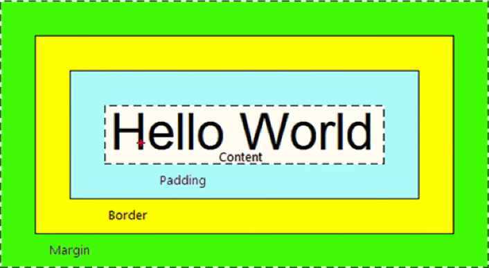

CSS盒子模型
CSS第三大特性：优先级
不同选择器具有不同优先级，优先级高的选择器样式会覆盖优先级低的选择器样式
继承 < 通配符 < 标签 <类 < id < 行内样式 < !important
简单来说选择器可以选择的范围越广优先级则越低，比如若上面的p只有行内式生效但是这个因为indent类里带!important，因此会是2位缩进
复合选择器时需要通过权重叠加计算优先级，如父子标签，需要从范围最小的样式开始比起，数量越多如子的行内多于父的行内，子就选择自己的行内
父标签div
子标签p, 因为范围最小的行内式有一个，会选择行内式的红色做修饰
需要注意的是：1. !important相当于王牌joker，优先级最高，一般开发慎用 2. 同优先级时比较层叠性盒子模型
用以布局，每个标签都可以看作一个盒子，方便布局。浏览器渲染网页时也会把网页中的元素看成矩形区域，也可称之为盒子。
盒子内容
CSS中规定每个盒子分别由：内容content、内边框padding、边框border、外边框margin（一般用来限定两个盒子直接的距离）构成

盒子1
盒子2
这里可以看到span的外边距只有左右
content跟border不做赘述, margin跟padding类似也不做赘述
内边距padding(同时添加4个方向的内边距)
padding可以当做复合属性使用，在padding中顺时针上右下左设置最多四个值设置四个方向的padding
若是三个值：上 左右 下；两个值：上下 左右, 即顺时针赋值，遇到空值则看对面的值
css3特性：自动内减
设置属性box-sizing:border-box, 自动计算多余大小，自动在内容中减去
清楚默认内外边距
浏览器会默认给标签设置默认的margin和padding，但一般项目开始前需要清楚默认值，后续在类中自行设置：
*{margin:0; padding:0;}
版心居中
margin:0 auto
常见问题：
外边距合并
垂直布局的块级元素
上下margin会取两者margin的最大值
外边距塌陷
互相嵌套的块级元素，子元素的margin-top会导致
父元素的margin-Top也为设置的margin
解决方法：
1. 清除浮动overflow: hidden
2. 转成行内块 display: inline-block
3. 设置浮动
行内元素的内外边距问题
若想通过margin或padding改变行内标签的位置，无法生效:
行内标签的margin-top、margin-bottom、padding-top、padding-bottom不生效，因此需要用行高line-height改变垂直位置